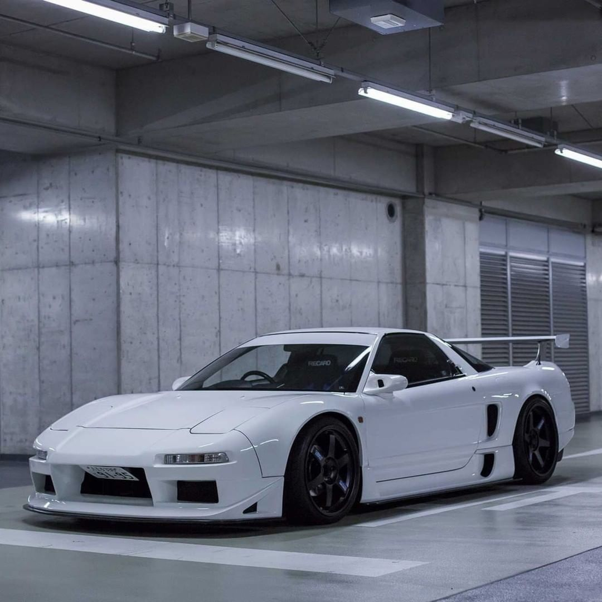

Сначала человек, потом машина. Honda
Honda японская корпорация, основанная в 1948 году изобретателем и предпринимателем Соитиро Хондой и финансистом Такэо Фудзисавой, известная прежде всего как производитель автомобилей, мотоциклов и силового оборудования. В JDM культуре прославились 2 модели honda. Это Civic и NSX.
Honda Civic Type R

Официальный дебют 1-го поколения (шасси EK9) состоялся в 1997 году. Именно тогда Honda Civic в кузове хэтчбек впервые получил имя Type R, что означало, что он достоин разделять философию «R» с уже тогда существовавшими Integra и NSX. Honda Civic Type R первого поколения. В основе Civic Type R 1-го поколения лежит Honda Civic 6-го поколения. На Civic Type R ставили атмосферный двигатель B16B объёмом 1,6 литра и системой газораспределения DOHC VTEC. Удельная мощность этого мотора достигала 185 л. с. при 8200 об/мин, что составляет 115,6 л. с. на каждый литр рабочего объёма. Машина выпускалась только в кузове 3-дверного хэтчбека. Автомобиль оснащен 5-ступенчатой МКПП, стыкованной с передней осью с дифференциалом повышенного трения и передним приводом. Спереди и сзади применена независимая пружинная подвеска. Тормозные механизмы дисковые на всех колесах, только на передних — вентилируемые. До 100 км/ч разгоняется за 6,7 секунды и развивает максимальную скорость 225 км/ч.В 1998 году компания Honda выпустила Civic Type R Motor Sports Edition. Этот автомобиль выпускался со стальными колесами, другой системой рулевого управления, без электростеклоподъёмников, кондиционера и радио. В 1999 году тюнинг-компания Honda Spoon Sports разработала гоночную версию N1 Type R с увеличением двигателя B16B до 11000 об/мин с алюминиевыми спортивными педалями. 1-е поколение Type R производили только на заводе Honda в Японии и были ориентированы только для внутреннего рынка.
Honda NSX
Honda NSX — спортивный автомобиль со среднемоторной компоновкой, производившийся компанией Honda с 1990 по 2005 г. В Северной Америке и Гонконге продавался под маркой Acura. При проектировании было использовано множество новаторских решений: это первый автомобиль, кузов и шасси которого изготовлены из алюминия, оснащался полностью электронным усилителем руля, электронной педалью газа (так называемый Drive-by-Wire), двигатель имел V-образное расположение цилиндров, максимальное количество оборотов 8000 в минуту, и недосягаемые по тем временам показатели мощности для атмосферных двигателей, впервые шатуны изготовлены из титана, впервые в мире комплектовался платиновыми свечами зажигания. Для лучшей аэродинамики днище автомобиля было плоским, а форма задней части кузова помогала максимально снизить силу отрыва колёс от поверхности на высоких скоростях.